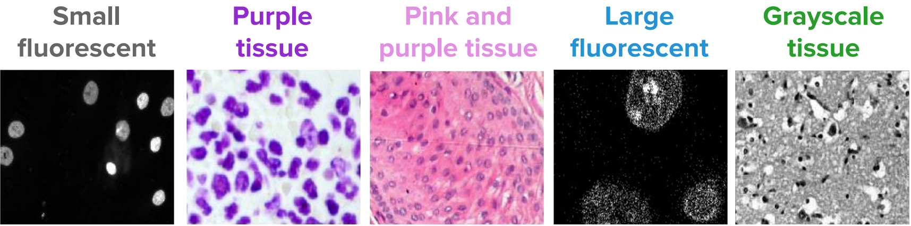
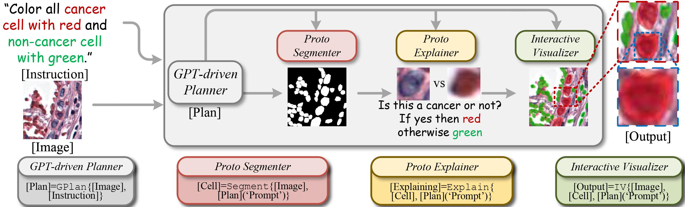

Abstract
The study of cell phenotypes, particularly in cancer cells, is a complex process involving the identification and measurement of unique cellular characteristics within microscopy images. Despite advancements in computer vision, integrating learning-based segmentation into the analysis of cancer cell morphology through multimodal imaging presents significant challenges. This abstract identifies three primary obstacles: (1) Learning inefficiency, where the demand for extensive annotated training data for tumor phenotypes is hampered by high costs and the difficulty in obtaining detailed annotations; (2) Model opacity, which affects the transparency and interpretability of these models, crucial in clinical settings where trust and understanding are paramount; (3) Hierarchical dyslexia in learning-based models, which limits their ability to grasp the complex relationships between cellular entities in multimodal cancer imaging. Addressing these issues requires a novel approach to learning-based segmentation, tailored to the unique complexities of cancer, to fully harness the potential of these technologies for medical diagnostics and research.
SegCell Benchmark

We endeavor to develop SegCell, the first-of-its-kind benchmark repository for cell segmentation evaluation, distinct in its approach from existing works. Our proposed repository will integrate
a comprehensive list of cell segmentation evaluation metrics, including F1-score, average precision metric, AUROC, Number of Cells per 100 Squared Micrometers, Fraction of Image Foreground Occupied
by Cells, Fraction of Match between Cells and Nuclei, Average Coefficient of Variation of Foreground Pixels Outside Cells, and others. Moreover, it will provide a leaderboard showcasing state-of-the-art
methods in cell segmentation and will be made openly accessible, with a preliminary version alreadyavailable at a specified URL. Utilizing SegCell we will conduct a systematic evaluation of proposed
methods, focusing on prediction performance, computation cost (including running time, space cost, and scalability), the tightness of proposed generalization bounds, and parameter sensitivity. We curate
a data repository obtained from public datasets, including the HuBMAP project, CODEX, Cell DIVE, MIBI, IMC and MAPs. The segmentation channels for each modality were carefully chosen based on
recommendations from Tissue Mapping Centers or peer-reviewed literature, ensuring consistency andaccuracy in evaluation results.
In-Context Segmenter As Visual Programmer

For a cellular image, our method employs a hierarchical approach to pixel prototyping segmentation. It starts with broad, coarse-grained labels and progressively refines them into more detailed, fine-grained labels. Throughout each level of granularity, our specialized module assists in identifying prototypes that serve as benchmarks for segmentation. For instance, the representation distinction between malignant and benign cells at the nucleus level is a critical differentiation point. This hierarchical, root-to-leaf structure is pivotal for capturing generic-to-specific relationships. Such a detailed and nuanced approach is particularly crucial in the context of cancer cell segmentation. In these cases, an in-depth and sophisticated understanding of context is necessary, as it requires high semantic precision and a thorough grasp of the image structure. This level of comprehension and structural mastery is notably lacking in current methods.